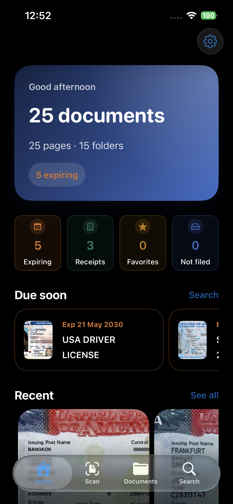
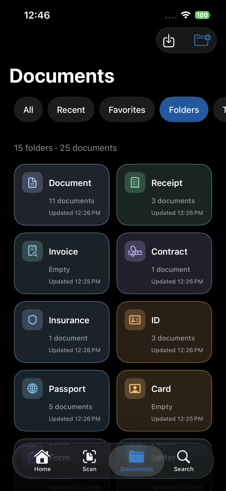
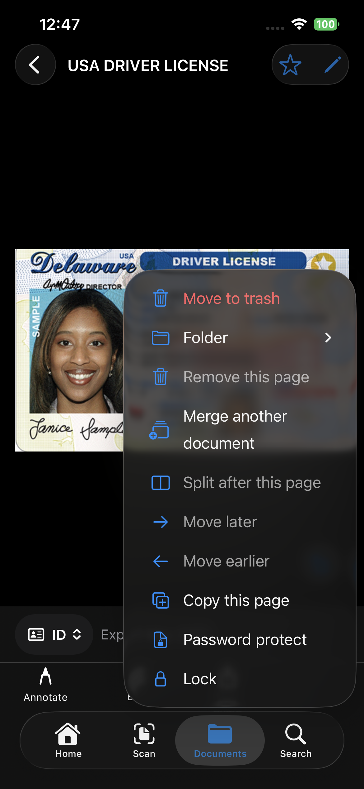
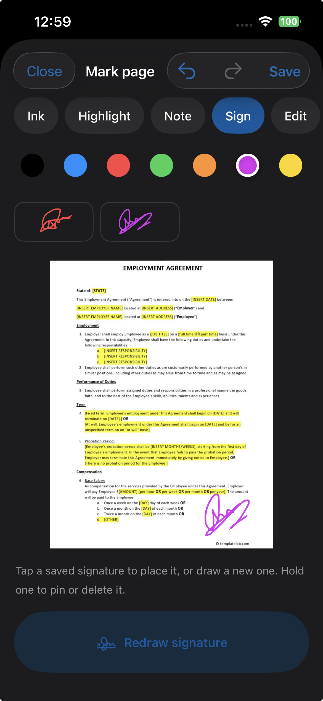
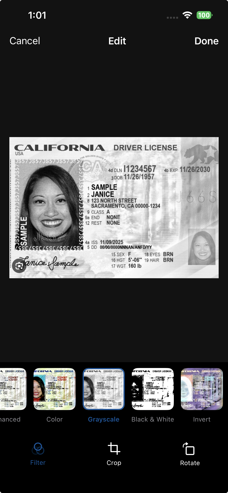

Scan
Capture one page or a stack. Auto suggests a title. Choose a type when you already know what the page is.
KScanner turns paper into a document you can read, file, and search. Recognition stays on the device. The library stays there too, until you choose to share a file.

Capture one page or a stack. Auto suggests a title. Choose a type when you already know what the page is.
Text is recognized on the iPhone, so you can copy a passage and search the words on the page.
Keep documents in folders, mark favorites, and rename anything. Trash holds a file until you delete it for good.
Find a document by the words it contains. Speak the query when you allow the microphone.
Send a PDF, Word, PowerPoint, Excel, JPEG, or text file. A PDF password is optional, and it is not saved in the app.
Face ID, Touch ID, or your passcode can cover KScanner when you leave. A single document can be locked on its own.




Scanning, reading, and search run on the device. This version does not sync a library with iCloud. A copy leaves the iPhone only when you share a file or export a zip and choose where it goes.
Read the Privacy Policy →Scan a first page, search inside it, export a backup, or write to support.
Visit KScanner Support →